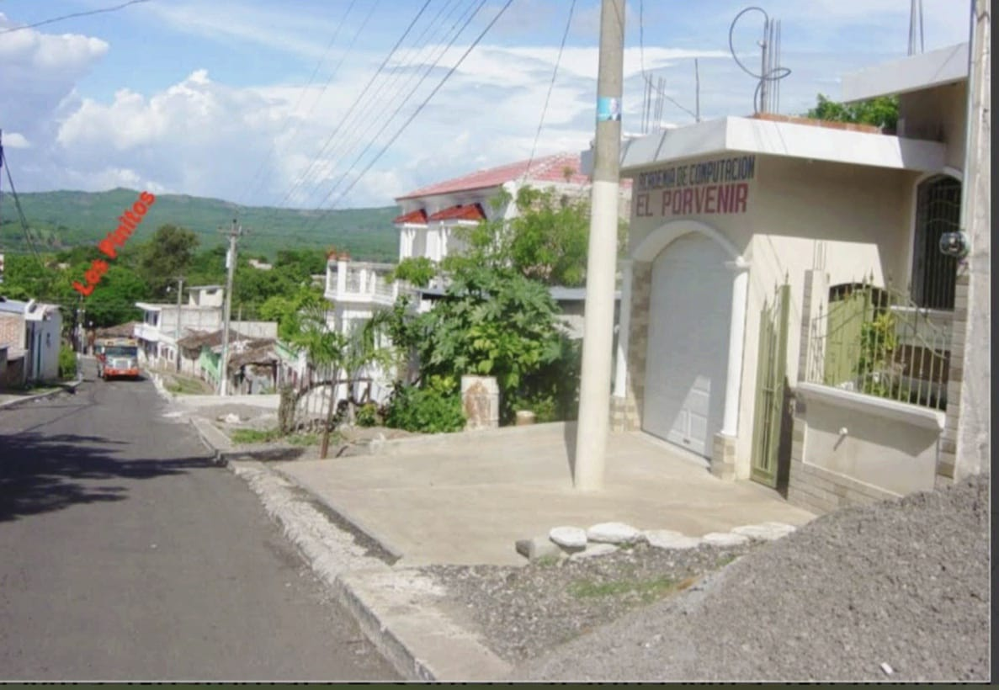
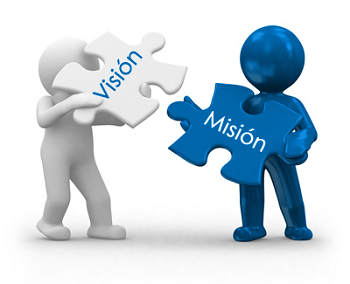

Descubre Quiénes Somos:

Somos una academia comprometida con la excelencia educativa en el campo de la informática.
En Academia de computación CPI, brindamos a nuestros estudiantes una experiencia educativa integral que combina conocimientos sólidos, habilidades prácticas y un enfoque en el éxito de los mismos. Con un equipo de profesionales apasionados y dedicados, estamos comprometidos a ayudar a nuestros estudiantes a alcanzar su máximo potencial y convertirse en líderes de la industria informática.
Historia de Academia CPI
La Academia surgió de la idea del Licenciado Evelio Adalí Payes Méndez, quien sintió la necesidad de compartir sus conocimientos en informática con la población Catarineca, para que estos se vayan actualizando en el mundo de la tecnología, ya que es el futuro del trabajo. Es por esto que cada día los instructores de Academia CPI nos estamos actualizando con nuevos conocimientos para brindar lo mejor a nuestros clientes. El primer nombre de la academia fue "El Porvenir", luego después de unos años se modificó el nombre a como se le conoce actualmente "CPI".
Equipo de CPI
Contamos con un equipo dedicado de profesionales de la informática que están comprometidos con el éxito de nuestros estudiantes. Desde nuestro fundador hasta nuestros profesionales de la informática, cada miembro de nuestro equipo trabaja incansablemente para brindar una experiencia educativa excepcional y apoyar el crecimiento y desarrollo de nuestros estudiantes.
Misión y Visión
Misión
Nuestra misión es proporcionar una educación de calidad que prepare a nuestros estudiantes para carreras exitosas en el campo de la informática, para que puedan contribuir de manera significativa en nuestra sociedad.
Visión
Nos esforzamos por ser reconocidos como un centro líder de excelencia en educación en informática, conocido por nuestro compromiso con la innovación, la calidad académica y el éxito estudiantil.
Valores CPI

- Excelencia Académica: Nos esforzamos por mantener altos estándares académicos y proporcionar una educación de calidad.
- Compromiso con el Estudiante: Nos comprometemos a apoyar a nuestros estudiantes en cada paso de su viaje educativo.
- Innovación: Buscamos continuamente nuevas formas de mejorar y adaptarnos a los avances en el campo de la informática.
- Integridad: Actuamos con honestidad ética y transparencia en todo lo que hacemos.
Enlaces de contacto:

Ir a contactos